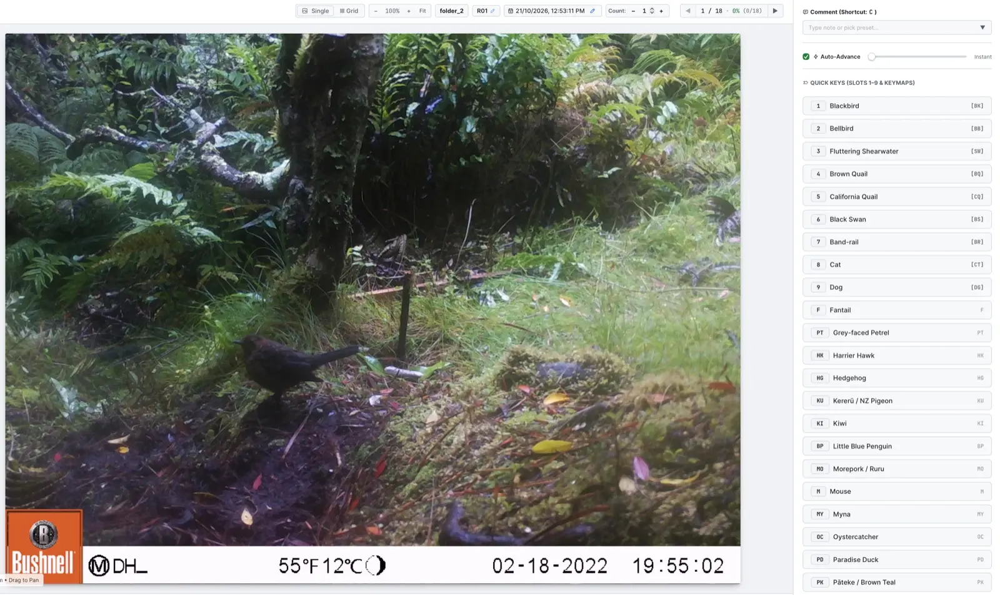
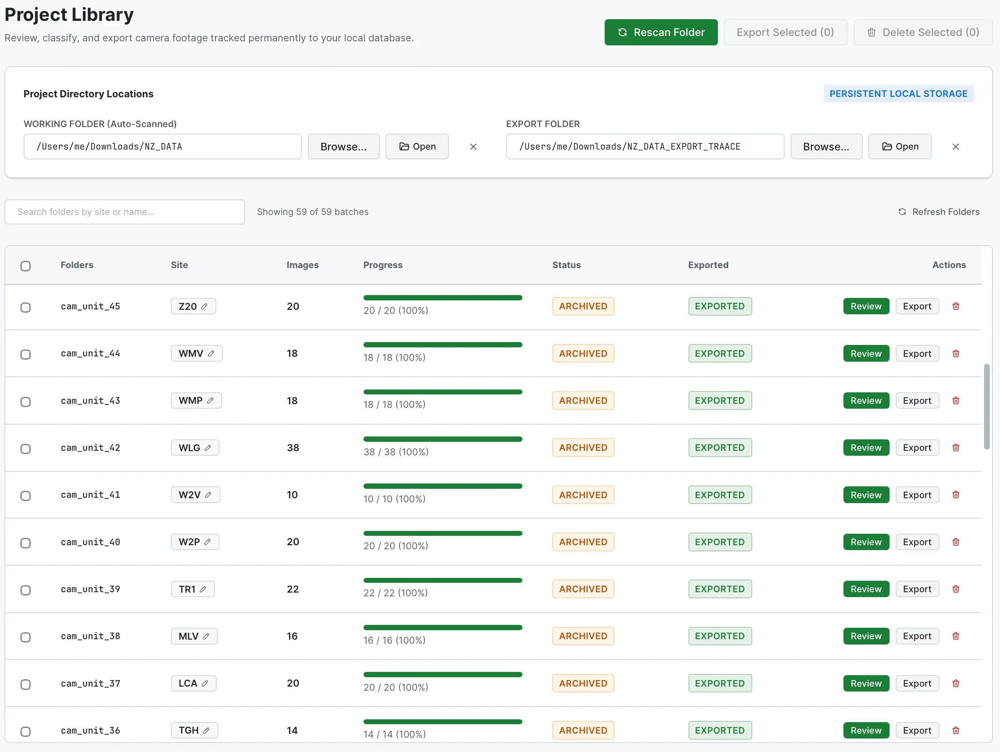
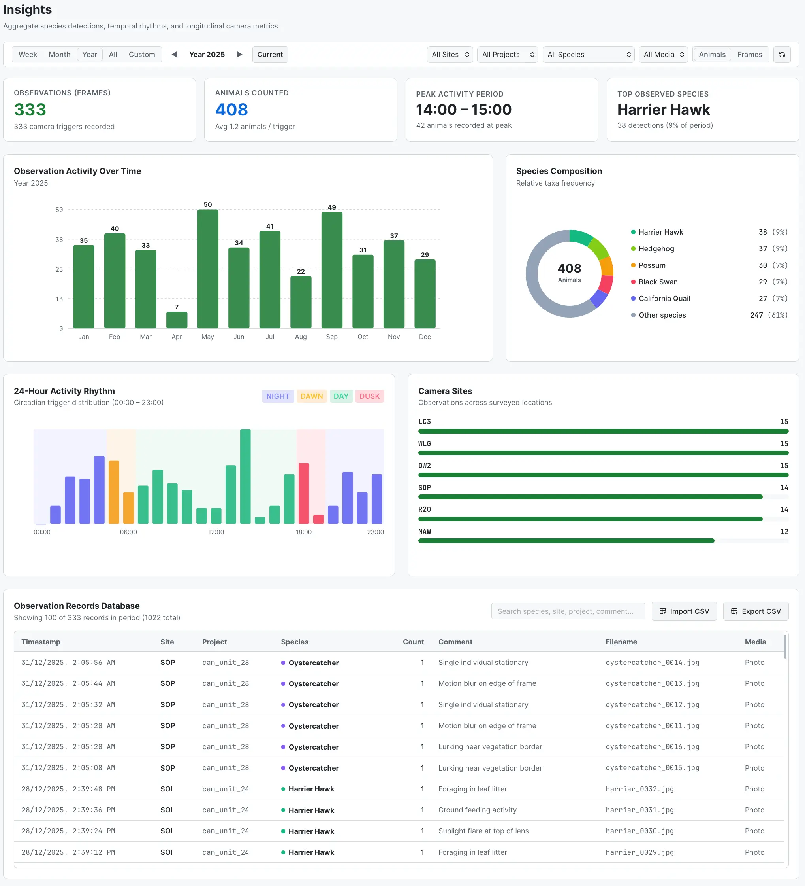
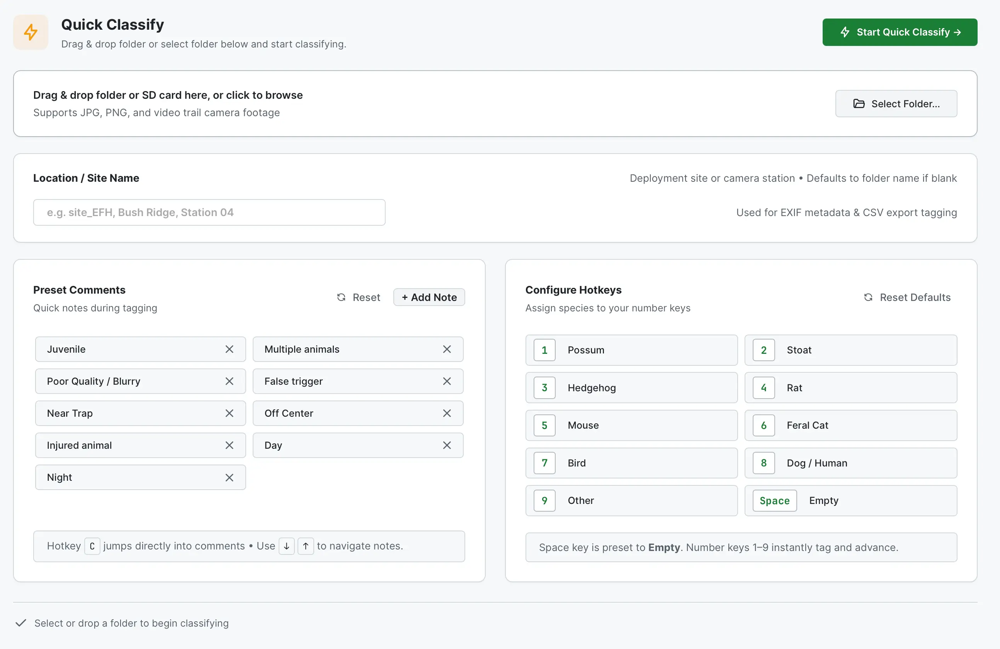

Rapid Classifier
Tag photos with single-key hotkeys (1–9) and auto-advance to the next image without touching the mouse.

Designed for conservationists, researchers, and nature enthusiasts in Aotearoa. It makes sorting camera footage effortless and responsive.
Tag photos with single-key hotkeys (1–9) and auto-advance to the next image without touching the mouse.

Scan folders automatically, track progress across deployment sites, and archive everything to a local database.

See when animals are most active with a 24-hour rhythm chart and a species frequency breakdown.

Pick a folder and start tagging straight away with hotkeys and preset comments. Export to CSV, Excel, JSON or TXT — nothing is kept once you export.

TRAAACE is not signed with a paid developer certificate yet, so your computer will warn you the first time you open it — see Opening it below.
Open the .dmg, drag TRAAACE to Applications, then right-click it and choose
Open (and Open again in the dialog).
If macOS says the app is damaged, open Terminal and run
xattr -dr com.apple.quarantine /Applications/TRAAACE.app
If SmartScreen appears, click More info → Run anyway.
TRAAACE needs Microsoft WebView2, which Windows 10 and 11 already include.
The simplest is the .deb: sudo apt install ./TRAAACE_*_amd64.deb
For the AppImage, run chmod +x TRAAACE_*.AppImage first. On Ubuntu you may also need
sudo apt install libfuse2 (libfuse2t64 on 24.04).